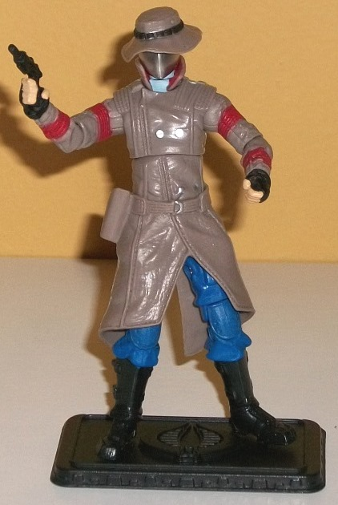
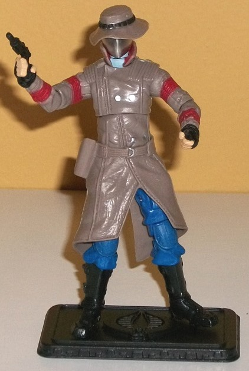
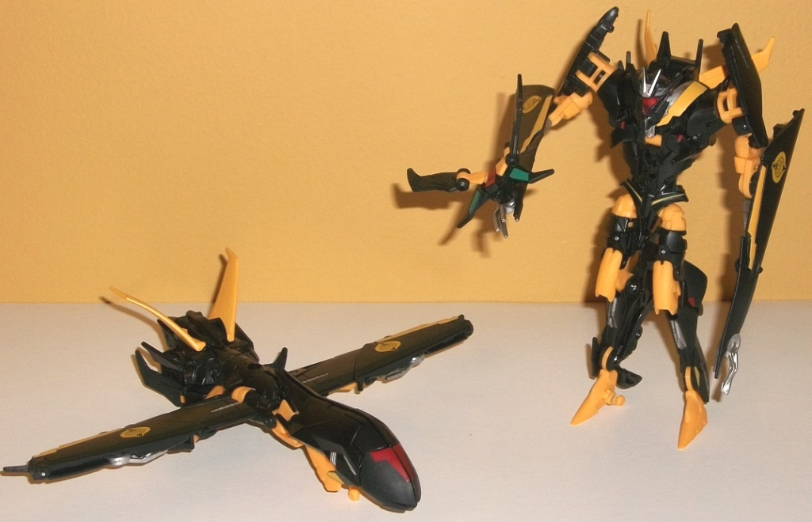

Old
Snake
Old
Snake

Color Scheme : Dull leathery tan, black, dark blue, and some silver, light fleshy pinkish tan, moderately dark dull red, and light pale blue
Old
Snake w/ Advanced Stealth B.A.T. Drones (2015 Transformers Club/GIJOE Club
Joint Exclusive)
Price
: $79 (in addition to membership)
(U.S.)
Allegiances
: Decepticon/Cobra
Old
Snake

Color Scheme
: Dull leathery tan,
black, dark blue, and some silver, light fleshy pinkish tan, moderately
dark dull red, and light pale blue
I'm not used to reviewing G.I. JOE figures-- I'll leave to that to the experts who collect these figures, so in terms of an actual numerical rating I'll leave Old Snake alone and focus on his features. "Old Snake" is from a Season 3 episode of the original Transformers series, in which Cobra Commander is old and in hiding-- hence the Cobra Commander silver mask for a face, but he has an old hat and trenchcoat on. The hat and trenchcoat are pretty much perfectly colored, being just the right shade of tan to make it look it's made of leather (or at least faux leather). He's got black fingerless gloves on, with a bit of his skin color showing through, but underneath his jacket you can see a bit of Cobra Commander's uniform still there-- beyond the obvious aforementioned mask, he's got a bit of light blue underneath the collar, dark blue pants, and high black boots. As one final little "hint" as to who he is, he has red bands around his arms. He has what I assume is the standard JOE articulation, with movement at the neck, shoulders (at two points), elbows (at two points), wrist and mid-body rotation, and movement at the hips (limited because of his trenchcoat), knees (at two points), and ankles (at two points), so he's pretty poseable. As far as accessories, he comes with a small handgun which can be stored in a little pouch on the side of his trenchcoat, and a backpack which can be strapped around his shoulders and plugged into a slot on his back. However, the backpack straps seem pretty cheap-- simply trying to put it on, the straps snapped, and I wasn't stretching them that much. That was kind of a bummer. As with all Fun Pub G.I. JOE figures, he comes with a base with little pegs for the holes on his feet to plug into, with a COBRA symbol on the base along with his name on the front.
Advanced
Stealth B.A.T. Drones

Size
: Deluxe
Difficulty of Transformation
: Easy
Color Scheme
: Black, orangish "cheesy"
yellow, and some dark red, silver, moderately dull forest green, and transparent
cherry red
Individual Rating
:
9.4
(NOTE: Because this is a repaint, this is not a full-blown review. This mainly covers any changes made to the mold and the color scheme, and merely compares it to Prime "Robots in Disguise" deluxe Soundwave. For a review on the mold itself, read the review of Prime the "Robots in Disguise" deluxe Soundwave figure here .)
This set comes with two
identical Prime Soundwave redecoes, which are meant to be transformable
versions of COBRA B.A.T. drones, which basically look like vanilla robot
drones with jet wings on their backs. Thus, the jet mode and the red paint
app on the front of the nosecone looks like the faces from the "original"
B.A.T. drones. As for the rest of the color scheme, it SEEMS to just be
based on something that looks cool and not referencing the B.A.T. drones
directly, given from what little info from the TF Wiki I've been able to
glean. I could totally be wrong about that, though. Regardless, The black
and orangish yellow color combo is pretty close to your "Reverse Bumblebee"
redecoes in terms of the amount of each, and it's a fairly decent color
scheme, though a more straightforward yellow would've looked better, methinks.
It's not a huge downside, though, since most of the yellow is used on small
parts or wings, so there isn't one huge area of yellow on the drones. There's
also some nice DeceptiCOBRA symbols on the wings in this color. There's
some silver on a few of the robot parts, like the claws and chest, which
works pretty well against the black; not so much against the yellow. One
oddity about the B.A.T. drones is that on their upper chest, the left side
is painted yellow while the right side is painted black. Not sure what
that's about; mirroring a chest strap perhaps? The best part of the drones'
color schemes are the really nice paint apps of red and dull forest green
on the "Nightshriek" drones that pop out of the chests. I really wish that
dull forest green was used more on the toy, it's a really neat color. Another
neat color is the transparent cherry red used for the "faces" in robot
mode, which both mirror the paint apps on the nosecone in vehicle mode
and just look cool against the black and silver.
No mold changes have
been made to the B.A.T. drones.
Although this is both
a GIJOE and Transformers club joint exclusive, this set appeals vastly
more to JOE fans. As a Transformers fan I have basically no interest in
Old Snake, and although the Stealth B.A.T. drones take a great mold and
give it a better color scheme, as far as characterization they obviously
have none and I had no idea what a B.A.T. drone was before this set, having
not followed GIJOE. As such, unless you're desperate for more Prime Soundwave
redecoes or really have an attachment to that one episode of G1 where Old
Snake appears, this set is probably a pass for most TF fans.
Reviews by Beastbot